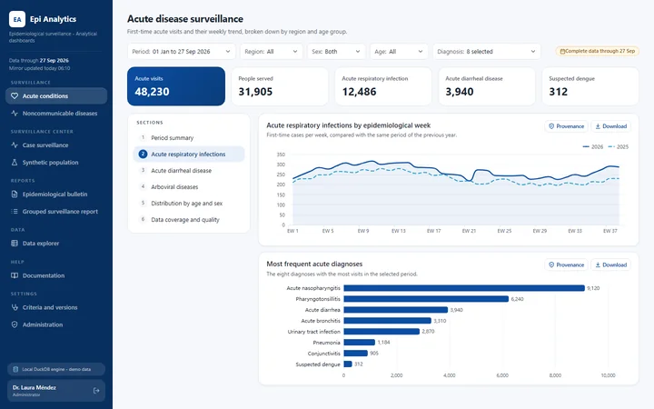
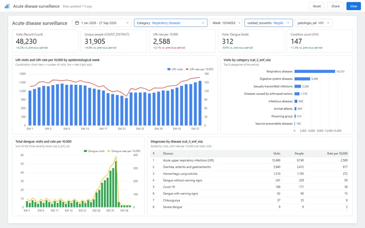
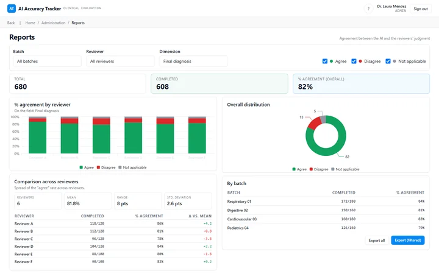
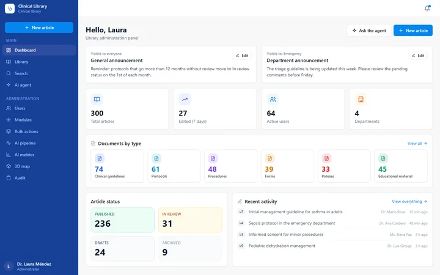
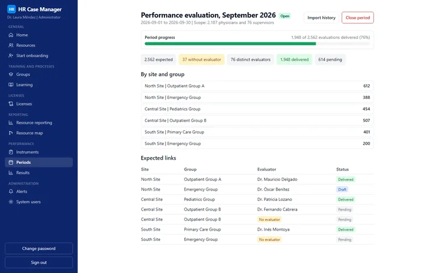
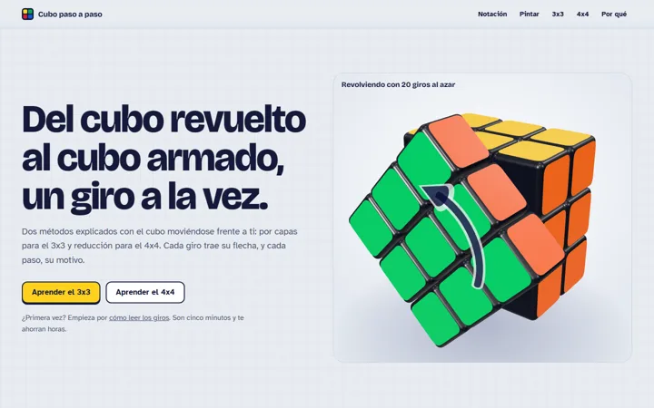
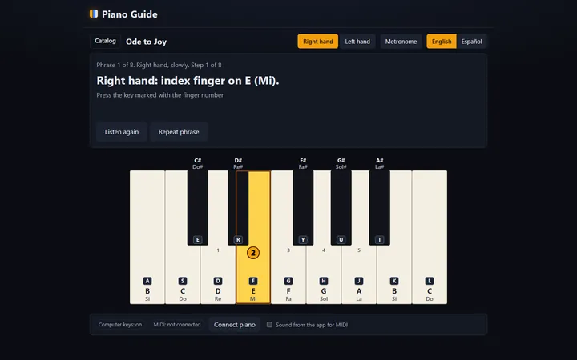
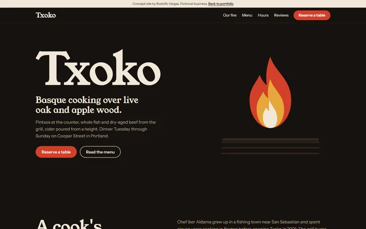
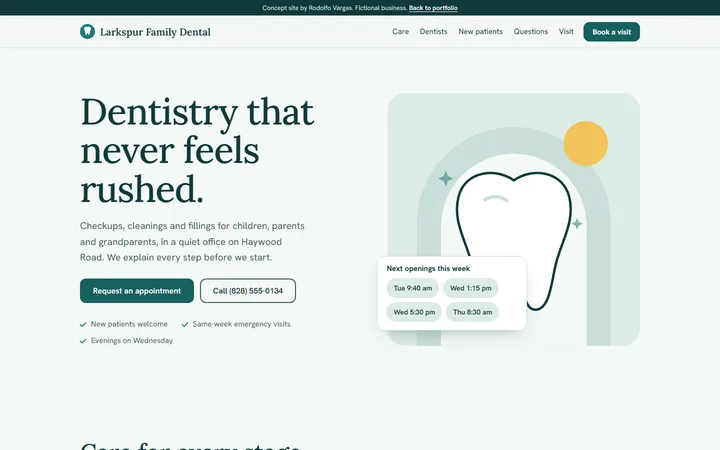
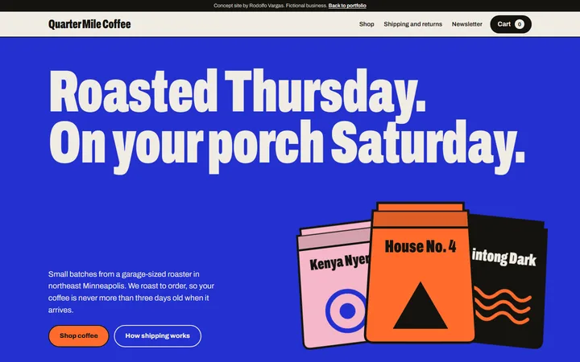

Rodolfo Vargas
Software engineer and AI solutions implementer.
I turn written requirements into tested, documented software that people can trust with real decisions.
How I work with AI Five cases Contact
Software engineer with experience building analytics platforms, AI-assisted tools and operational systems for a national public health service, used by hundreds of people. The domain changes; the discipline does not: a clear requirement, a written plan, tests, and evidence for every step. I use AI to deliver faster without giving up control. Before that, a year in IT support taught me how people really use software under pressure.
AI proposes and executes. A person decides, approves and is accountable.
AI-accelerated delivery, engineered for trust
AI speeds up writing. It does not decide, approve or answer for anything.
The systems below were built with AI-assisted development inside a process where the requirement comes from the people who use the system, the plan is written and approved by a person before code, and each slice of work leaves evidence that someone can check. The point is not that AI was used. The point is that the result is specified, tested, reviewed and documented well enough to be defended by a person.
- A person decides
- Written or automated step
Human in the loop, in eight steps
- A requirement from the people who use the systemWork starts from a request or a document written with the area that needs the system, not from a guess.
- A written specification before codeIntent, scope and design exist as text that can be read, questioned and corrected before anything is built.
- A plan approved by a personThe plan lists the decisions a human must own. Work proceeds only inside what was decided.
- Task-by-task slices, each with evidenceA slice is checked off only after its outcome was observed, and the observed result is written next to it.
- Every change is reviewedReviews are recorded, including the ones that found problems.
- Tests as the gateNothing is reported as done on intent. A local gate must pass, and guards ship with the test that proves they can fail.
- Decisions are dated and recordedChoices are written with their reason and the discarded alternative, so they can be defended months later.
- Handoffs so anyone can resumeEach project carries a document that lets a new person or session continue without reconstructing anything from memory.
Each step cites only the projects where it is on record. The evidence for every step is listed on each case page, as paths in private repositories.
Five cases
Figures are as of August 2026 unless a row says otherwise. Information in these screens has been anonymized.

Epidemiological analytics platform
Dashboards, bulletins and a surveillance center served from a local mirror, at zero query cost and with auditable figures.
- 6 to 20users
- 0warehouse cost per interaction
- 4.18 millionappointments, as of 2026-08-24

Looker Studio reporting
Dashboards and a versioned written report for an epidemiology unit, plus an hourly training campus report, with the logic kept as text.
- 2dashboards, acute and chronic conditions
- 57pages in the written report, version 3
- Hourlycampus report refresh, by design

Clinical AI accuracy tracker
Measures, case by case and under physician review, how often an AI diagnostic suggestion holds up.
- 75 to 90%agreement, AI and evaluators
- 5,000 to 50,000cases evaluated
- 6 to 20medical evaluators

Clinical knowledge library
One approved source for medical and protocol guidance, with an assistant that answers from cited articles.
- 200 to 1,000articles
- 400+physicians as users

HR case management
The full lifecycle of a medical workforce in one system, from hiring routes to performance evaluations.
- 2,562expected evaluations, as of September 2026
- 2,187physicians in scope
- 76supervisors
Side projects
Built on my own time, open source and live.

Rubik's cube, step by step
An interactive 3D guide that teaches the 3x3 layer method and the 4x4 reduction method, and can solve any scramble with each step narrated. Live demo | Source code
- 3x3 and 4x4guided methods and auto-solver
- three.js3D rendering, no framework
- Testedevery case verified by simulation

Piano guide
A web app to learn songs on the piano: notes fall onto a 3D keyboard with finger numbers, a score scrolls in sync, and practice tools loop, slow down and split hands. Beginner and Original levels share one data model, with lessons and harmonic analysis. Live demo | Source code
- Two levelslabelled notes or engraved score
- Web Audio + three.jsone clock drives sound, keys and score
- 741 testsnotes checked against the source edition
Website concepts
Websites for fictional businesses, built to show range and craft.

Txoko
Restaurant
A Basque grill with a full menu, a reservation form and an animated fire, in warm charcoal and ember red. View site

Larkspur Family Dental
Dental clinic
A calm clinic site with services, team, FAQ and an appointment form that fills from live-looking openings. View site

Quarter Mile Coffee
Online store
A coffee shop with category filters, quick view and a working cart drawer with quantities and subtotal. View site
Services
Websites and software for small and growing businesses. Every project gets a fixed quote after a short call.
- Landing page
- One page to present a product or service and capture leads: contact form, mobile-ready design, basic SEO and analytics.
- Business website
- A multi-page site with custom design, blog or news, and an optional panel so your team can edit content without code.
- Online store
- Catalog, cart, card payments, inventory and order emails.
- Dashboards and automation
- Your key numbers in one dashboard, plus automated reports, reminders and alerts that save hours every week.
- Custom software and AI assistants
- Web apps built around your workflows, and AI assistants that show where every answer comes from and wait for a person before acting.
- Monthly care
- Updates, backups, small changes and support after launch.
Always included
- Mobile-ready design, basic SEO and accessibility.
- Two rounds of revisions.
- Domain, hosting and accounts set up in your name.
- Full code ownership once the project is paid.
How it works
- A short call to understand what you need.
- A written proposal with scope, timeline and a fixed price.
- Design and build, with a preview you can review along the way.
- Launch, handoff and optional monthly care.
Stack
- Back end
- TypeScript with NestJS and Next.js (Server Actions); Python 3.12 with FastAPI; Google Apps Script for a first-generation product; Kubernetes CronJob for an hourly report job.
- Data
- PostgreSQL 15 and 16 with pgvector, Prisma, SQLAlchemy and Alembic; DuckDB, Parquet and dbt for analytical mirrors of a cloud warehouse; BigQuery and Google Sheets as sources for Looker Studio.
- AI
- Retrieval-augmented answers with Vertex AI (Gemini 2.5 Flash and 768-dimension embeddings), plus a curated question bank approved by an auditor.
- Reporting
- Looker Studio with calculated fields and parameters over BigQuery and Google Sheets; Python and Colab for cleaning; docx-js for versioned Word reports.
- Front end
- React 18 and 19, Vite, Tailwind CSS, shadcn/ui, Apache ECharts and Recharts.
- Quality
- Vitest, Jest, pytest, Playwright, ruff, mypy in strict mode, Biome, ESLint, commitlint and Husky.
- Delivery
- Docker and Docker Compose, Cloud Run and Cloud SQL as deployment targets, CI workflows with a dependency vulnerability check.
Exact versions are listed on each case page.
Education and current learning
Education
Engineer in Software Development, Universidad Francisco Gavidia.
Currently learning
HL7 FHIR. I am studying for the Foundational Implementer certification, as the first step toward Advanced Developer.
Why now: I already handle clinical data that other systems need to read, such as appointments, diagnoses and protocols, and FHIR is the standard for exchanging it.
Data engineering on Google Cloud. I am studying toward the Professional Data Engineer certification.
Why now: my analytics platform work mirrors a cloud warehouse into DuckDB and Parquet and models it with dbt, which is the data engineering this certification covers.
Contact
- GitHub: github.com/rodolVargasdev
- Email: rodolfovargasoff@gmail.com